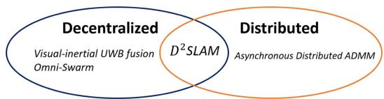
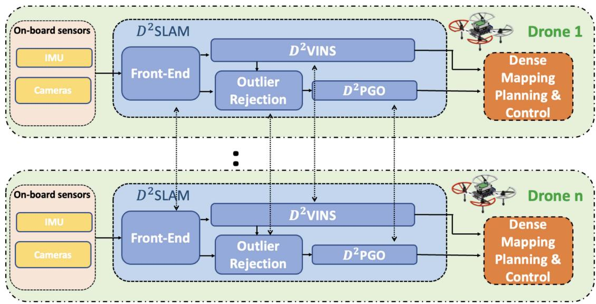
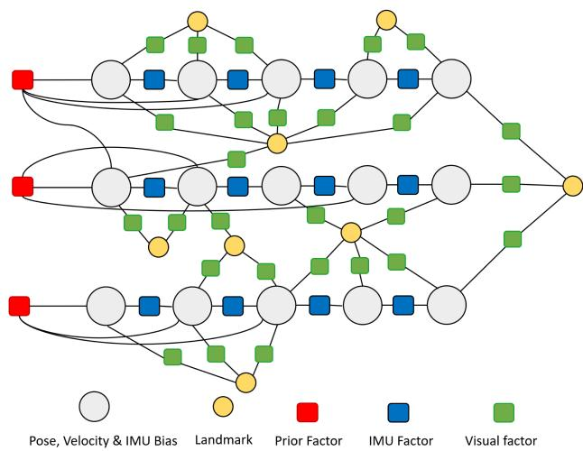
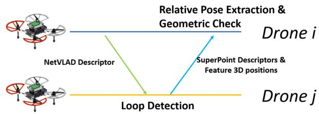
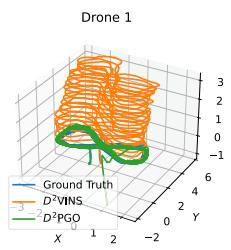

阶段 H · 专题支线（动态 / 语义 / 多机 / 事件）/ Lesson 0173
D²SLAM：空中集群的近场与远场
一群无人机贴身编队时，另一架就是最大的「动态物体」；散开几百米时，又只剩大方向可谈。🚁 这一节看 D²SLAM 怎么按距离切换两套算法。
🎯 主题：去中心化＋分布式的空中集群协作视觉惯性 SLAM
👥 作者：Hao Xu, Peize Liu, Shaojie Shen（港科大，2024）
📅 年份 · D²SLAM: Decentralized and Distributed Collaborative Visual-Inertial SLAM System for Aerial Swarm
本节目标
读完你应该能：说清 D²SLAM 名字里两个 D 各指什么；解释近场为什么用 D²VINS（ADMM 厘米级相对定位）、远场为什么用 D²PGO（ARock 异步位姿图）；说出远场拒假回环用的是分布式 PCM；知道这套系统装在 623 克的小无人机上真实飞过。
和前面课程怎么接
★ 0168 的假回环铁律在远场继续生效——D²PGO 用分布式 PCM 拒错缝，与 DOOR-SLAM 同思路（0168 已讲过 PCM 公式）。★ 架构回链 0168 的三档主线：D²SLAM 明确定义「去中心化（decentralized）＝无主协调」「分布式（distributed）＝计算分散」，并两个都占。★ 动态↔多机的交叉点就在这节：近场里另一架无人机本身就是最大的动态物体，D²VINS 专门把它当成高精度相对观测量来跟踪。★ 检索用 NetVLAD，正是 0168 DOOR-SLAM 用的那个描述子。★ 名字与 0170 的 DiSCo-SLAM 极像，务必靠作者与传感器区分（0170 已立教学点）。
1. 先说人话：为什么「距离」决定「算法」
设想一支编队飞行的无人机群。两架无人机贴得近（比如 3–5 米内）时，你的相机里一大半画面都是队友——它遮挡、它移动、它就是环境里最大的动态物体。这时你需要的是厘米级的相对位置：编队、避撞、协同搬运都靠它。反过来，两架无人机飞远了（几栋楼之外），互相根本看不清细节，你能指望的只是「我们俩的地图大致对得上、大方向一致」。
D²SLAM 的核心设计就是按距离切换两套状态估计：近场用 D²VINS（ADMM 紧耦合视觉惯性里程计，小于约 3–5 米时交换全关键帧，相对定位到厘米级）；远场用 D²PGO（异步分布式位姿图优化，交换 NetVLAD 紧凑关键帧，把全局轨迹缝到一起）。一套系统，两个档位，覆盖整个集群。
这张图在画什么：左面板是贴身编队的两架无人机，中间画了一把标尺——近场要做厘米级相对定位（D²VINS）；右面板是飞远后的两架无人机，中间只有一条虚线——远场只求全局大方向一致（D²PGO）。
怎么看这张图：① 左边看标尺与刻度：距离近，误差必须压到厘米；② 右边看虚线：距离远，细节看不清，只有轨迹的大形状可对；③ 两面板下方的通信量也不同——近场传全关键帧＋共享路标（约 3.5 kB/步），远场传 NetVLAD 紧凑关键帧（单次约 81 kB）。
要记住的一句话：D²SLAM 的答案是「距离决定算法」：近场用 D²VINS 拼精度，远场用 D²PGO 拼全局。
这里还有一条动态↔多机的交叉线：单机 SLAM 里「动态物体」是要剔除的麻烦（回顾 0153–0157 动态块）；但近场编队里，那架挡在镜头前的队友不能剔——它恰恰是你要最精确跟踪的对象。D²VINS 把队友直接当作高精度的相对观测量来估计，这是本季两条支线在最典型处的一次相遇。
2. D²SLAM 的两个 D：去中心化 ＋ 分布式
名字里的 D² 不是随口起的——论文特意区分了两个常被混用的词：去中心化（decentralized）指「没有主节点协调」，分布式（distributed）指「计算与存储分散到每台机器人上」。很多系统只占其一：有的去中心化但没有把计算真正拆开；有的把计算拆开了却还靠一个协调者。D²SLAM 的主张是两个都占：无主协调、各机各算。
先处理一个书写细节（规范 §八②）：这份语料文件的一级标题原文写作 D<sup>2</sup>SLAM（带 HTML 上标标签），本课一律写作 D²SLAM（Unicode 上标）。另外复习 0170 立过的教学点：DiSCo-SLAM（Huang 等，2022，激光，ScanContext）与 D²SLAM（Xu 等，港科大，2024，空中集群视觉惯性）是两篇不同的论文，名字像，务必靠作者与传感器区分。

原图注（Fig. 3）：Visual-inertial UWB fusion 和 Omni-Swarm 是去中心化的，异步 Distributed ADMM 是分布式的，D²SLAM 既是去中心化也是分布式的。
怎么看这张图：这是一张「坐标系分类图」：横竖两个维度分别是「有无主协调」与「计算是否分散」，各系统落在不同象限，D²SLAM 独占「两者兼备」那一格。盯着看哪些同行只占一格，就能明白这个 D² 的含金量。
这张图在画什么：左面板：三架无人机两两直连成网，中间画着红叉——没有服务器、没有主节点（去中心化）；右面板：同样三架无人机，每架下面挂一个「子问题」小盒子——计算与存储分散到每台（分布式）。
怎么看这张图：① 左边问的是「协调权在谁手里」：无主，靠对等协商；② 右边问的是「活在哪里干」：每台抱着自己的因子图子问题本地解；③ 一个系统可以只占其一，D²SLAM 的卖点就是两个都占。
要记住的一句话：去中心化管「谁来协调」，分布式管「在哪算」，D²SLAM 交的是两份答卷。
整体架构上，每架无人机独立跑一份完整的 D²SLAM：前端处理鱼眼图像（四目全景，单相机横向视场约 200°，相邻相机重叠约 110°，保证「队友在侧后方也看得见」），后端做状态估计，结果再喂给稠密建图、规划与控制。看下面这张原文架构图，注意它是复制品——每架无人机上都装着同样一套。

原图注（Fig. 2）：D²SLAM 的架构。D²SLAM 独立运行于每架无人机上：数据先经前端处理，再送入后端做状态估计，结果用于稠密建图、规划与控制。
怎么看这张图：图里画了两架（Drone 1 与 Drone n）：每架都有「传感器 → 前端 → D²VINS / 异常剔除 / D²PGO」的同构流水线，机间的虚线箭头就是两套后端交换信息的通道。盯住「Outlier Rejection」这一格——它就是远场拒假回环的位置。
3. 近场：D²VINS，用 ADMM 把紧耦合 VIO 拆开算
近场的任务是把「我和队友的相对位置」估到厘米级。做法是紧耦合视觉惯性优化：把每架无人机的位姿、速度、IMU 偏置放进同一个滑动窗口因子图，与视觉路标一起联解——这正是第三季 VIO 课（紧耦合那几节）的思路。新的麻烦是：单机的 VIO 在一台计算机上解，多机的紧耦合 VIO 怎么在没有服务器的情况下解？D²VINS 的答案是 ADMM（交替方向乘子法）：把大优化拆成每架无人机一个子问题，路标按「归属」分成不相交的集合（谁看到的多归谁），各机分头解自己的子问题，然后交换平均状态、把解拉向平均，再解一轮，迭代到大家的估计一致。

原图注（Fig. 9）：D²VINS 的因子图示意。滑动窗口内的状态（位姿、速度、IMU 偏置）由 IMU 因子、视觉因子与先验因子相互连接。
怎么看这张图：这是单机视角的因子图——就是你第二季 BA / 位姿图课里见过的那种结构：圆圈是待估状态，边是约束。ADMM 做的事，就是让每架无人机抱着这样一张图各自解，再靠「平均状态」这一步把多张图对齐。
这张图在画什么：三格连环画画出 ADMM 的一轮循环：① 两架无人机各抱一张自己的因子图（滑窗＋各自的路标子集）分头求解；② 中间交换「平均状态 x̄」——你传我、我传你；③ 各自把解拉向平均，再回到①继续，直到两边的估计收敛到一致。
怎么看这张图：① 先看第一格：路标按归属分成不相交集合，所以各机解的是「自己的那部分」，不冲突；② 再看第二格：双向箭头上的 x̄ 就是协调的全部内容——不用传原始图像，只传状态平均；③ 第三格的循环箭头表示这个过程反复做，平均拉力让两张图慢慢对齐。
要记住的一句话：ADMM 的协调方式＝「分头解题、定期对平均」——这正是「分布式」这个名字在数学上的落地。
这句话在说什么：① 这个式子在算「让每架无人机自己的解尽量好（各最小化 fᵢ），同时大家的 xᵢ 都不许偏离公共的平均 x̄」；② 为什么这样就能对齐——平均步骤像一只看不见的手，每轮把所有人往同一个坐标系拽一点，迭代收敛后共享路标与相对位姿的估计就统一了；③ 状态更新在 SE(3) 流形上用黎曼方法做（回链第二季讲过的旋转表示：旋转不能直接当普通向量加减）。实测近场精度：Omni 2 数据集 ATE 平移误差 0.069 米，Omni 5 数据集 0.075 / 0.076 米——厘米级。
互动判断
编队飞行中两架无人机相距约 4 米，D²SLAM 此刻应该主要靠哪套模块工作？
4. 远场：D²PGO，ARock 异步位姿图 ＋ 分布式 PCM
飞远了，视觉重合变少，D²VINS 那种「共享路标直接量相对位置」的玩法失效，退回到多机块的老问题：靠机间回环把全局位姿图缝起来。流程与 0168 的 DOOR-SLAM 一脉相承：各机把 NetVLAD 紧凑关键帧广播出去；收到后做分布式回环检测，匹配成功才回传完整关键帧、提取相对位姿（见下方原文 Fig. 8）；随后用分布式 PCM 拒假回环，再用 ARock 异步分布式优化解位姿图。

原图注（Fig. 8）：分布式回环检测示意：无人机之间传递含 NetVLAD 全局描述子的紧凑关键帧；无人机 j 收到无人机 i 的数据后启动回环检测，若匹配成功，j 再把含路标信息的完整关键帧传回 i，最终提取相对位姿。
怎么看这张图：注意传的东西分两步走——先传「小」的紧凑关键帧做检索，命中了才传「大」的完整关键帧做几何验证。这就是多机块反复出现的省带宽套路（回链 0168 DOOR-SLAM 的 NetVLAD 前端、0170 的描述子三兄弟）。
拒假回环用分布式 PCM——0168 详细讲过的那套「能互相拼成闭环的最大一致集」：
这句话在说什么：① 这个式子在算「把两机之间的几条边首尾拼成一个环，环闭合得好不好」；② 为什么这样就能判对——真回环拼出的环几乎严丝合缝，假回环拼出的环一定对不上；③ 什么时候当回事——只把「互相都能拼闭环」的边请进一致集，孤证与矛盾边一律出局。要诚实说：D²SLAM 远场选的是 PCM 而非 0169/0171 的 GNC 族，作者自己承认 PCM 在大图上效率偏低——这是它与 GNC 族系统相比的短板（复习：PCM 漏真、GNC 保真）。
解位姿图时，D²PGO 用 ARock 异步迭代：旋转初始化用 chordal 松弛（把旋转拆成矩阵元来解，再 SVD 恢复回 SO(3)），随后各机不等彼此、拿到新数据就更新自己那一块。为什么强调异步？看下面这张对照图。
这张图在画什么：左面板（对照）：三架无人机各自干活，但红色栅栏逼着快的两架停下等最慢的那架——同步模式；右面板：ARock 异步——三行进度块长短不一、亮绿色的「新更新」出现在不同时刻，谁的数据到了谁就更新，没有栅栏。
怎么看这张图：① 左边看红栅栏：一架慢，全员减速；② 右边看绿色块的位置：三行的更新节奏完全不同，但整体都在推进；③ 空中集群的无线链路延迟抖动大，异步正是为此设计。
要记住的一句话：ARock 的哲学是「不等最慢的」——用容忍暂时的旧数据，换来整体不被拖垮。
互动判断
关于 ARock 异步分布式优化，下面哪个说法对？
5. 实验怎么看：近场厘米级，远场大图
平台很轻：623 克的小四旋翼，机载 Xavier NX，四目鱼眼相机＋可选双目，单次飞行约 10 分钟——说明这套「去中心化＋分布式」不是工作站上的玩具，是真能装上小飞机的。实验分两层看：
- 近场（D²VINS）：Omni 2 数据集 ATE 平移 0.069 米，Omni 5 数据集 0.075 / 0.076 米——多机相对定位压到厘米级；每步通信量最大约 3.5 kB/机。
- 远场（D²PGO）：TUM Corr 5（12065 关键帧、16814 条边）求解 10.1 秒；OmniLongYaw 5（16430 关键帧、51358 条边）20.5 秒——大图能解，且随机器人数量增加实测接近线性。
- 与 DOOR-SLAM 对比（诚实版）：各有胜负——OmniLongYaw 5 上 DOOR 略优（0.149 vs 0.168 米），TUM Room 5 上 D²SLAM 更好（0.032 vs 0.064 米）。作者承认：远场偏航角重叠不足时精度会掉，PCM 在大图上效率也偏低。

原图注（Fig. 12）：OmniLongYaw 5 数据集上 D²VINS 与 D²PGO 估计的轨迹：D²VINS 的轨迹漂移明显，D²PGO 的轨迹紧贴真值。
怎么看这张图：这正是「近场／远场」双模块价值的直观证据：5 架无人机长时间飞行后，只靠近场 VIO 的轨迹已经飘走；远场 D²PGO 用机间回环把全局拉回真值。盯着黑框区域里两族轨迹的分岔看。
最后把 D²SLAM 放回 0168 的主线：它是「去中心化＋分布式」一档的代表，把「近场拼精度、远场拼全局」拆成两个专门化模块；鲁棒后端站在 PCM 族这边（与 0168 DOOR 同族），而不是 0169/0171 的 GNC 族——这是它诚实写明的短板，也是你读论文时要学会辨认的「取舍痕迹」。
课后练习
- D²SLAM 名字里的两个 D 各指什么？为什么说它「两个都占」？
展开查看答案
去中心化（decentralized）＝没有主节点协调，peer 对等；分布式（distributed）＝计算与存储分散到每台机器人。很多系统只占其一，D²SLAM 既无主协调、又把紧耦合优化真正拆到每机上（原文 Fig. 3 就是按这两个维度分类的）。
- 近场用全关键帧（约 3.5 kB/步）、远场用 NetVLAD 紧凑关键帧——「按距离切换传什么」换来了什么？代价是什么？
展开查看答案
换来：近场共享路标直接量出厘米级相对位置；远场通信量骤减（单次约 81 kB）且能维持全局一致。代价：两套模块各有失效条件——远场偏航重叠不足时精度下降（作者自述），近场超出约 3–5 米就无法靠共享路标工作，必须切换到回环路线。
- D²SLAM 远场用什么拒假回环？与 0169 / 0171 的 GNC 族相比弱势在哪？
展开查看答案
用分布式 PCM（最大一致集，同 DOOR-SLAM 思路）。弱势：PCM 是批式最大团思路，大图上效率低、recall 偏低（漏真回环）；GNC 族（0169 LAMP 2.0、0171 Kimera-Multi 的 D-GNC）在线运行且保 recall。作者自己也承认 PCM 大图效率低——这是 D²SLAM 的诚实短板。
- DiSCo-SLAM 和 D²SLAM 怎么区分？
展开查看答案
靠作者与传感器：DiSCo-SLAM＝Huang 等，2022，多机 3D 激光，用 ScanContext（0170 讲过）；D²SLAM＝Xu 等，港科大，2024，空中集群视觉惯性，近场 D²VINS＋远场 D²PGO。两篇都在语料库里，是不同论文；名字像但领域与传感器完全不同（0170 已立此教学点）。
读完你应该能回答
- D²SLAM 的「去中心化」与「分布式」分别指什么？为什么它说两个都占？
- 近场为什么选 D²VINS＋ADMM？「对平均」这一步在协调什么？
- 远场为什么退回「回环＋位姿图」？拒假回环靠什么？
- ARock 异步相比同步栅栏，换来什么、容忍什么？
- D²SLAM 的近场设计和动态块（0153–0157）有什么交叉？